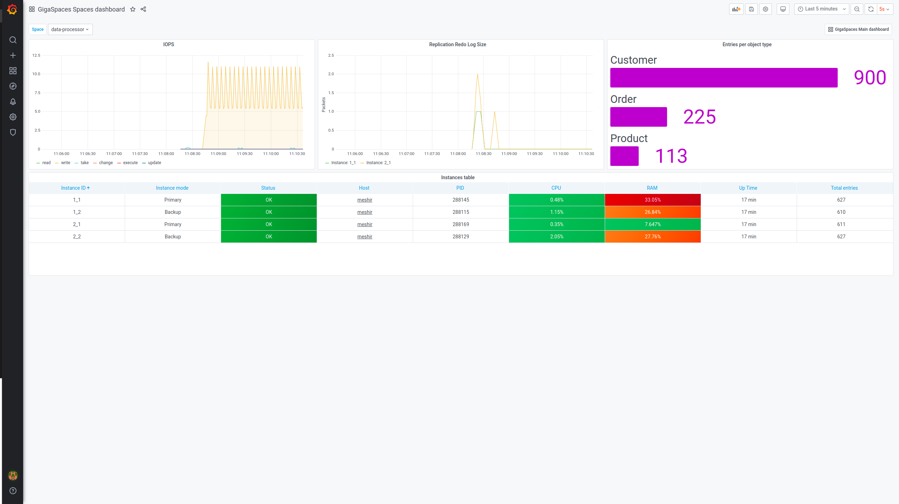
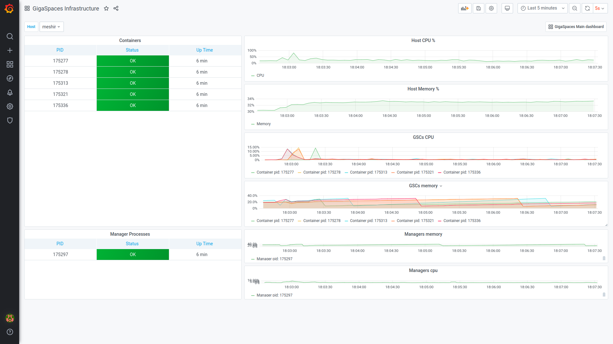

Monitoring a production environment of any system requires inspecting many statistics.
To overcome these limitations,
When these metrics are enabled,
InfluxDB and Grafana are both open-source and free, but are not bundled in
To install InfluxDB (1.8.0 or earlier), download from here and follow the installation instructions.
To configure InfluxDB, edit the metrics.xml file, found under
To configure InfluxDB, edit the metrics.xml file, found under
<grafana>
<datasources>
<datasource name="influxdb">
<property name="type" value="influxdb"/>
<property name="url" value="http://myhost:8086/db/mydb"/>
<property name="username" value="root"/>
<property name="password" value="root"/>
</datasource>
<datasource name="grafana">
<property name="type" value="influxdb"/>
<property name="url" value="http://myhost:8086/db/grafana"/>
<property name="username" value="root"/>
<property name="password" value="root"/>
<property name="grafanaDB" value="true"/>
</datasource>
</datasources>
</grafana>
To install Grafana (6.7.3 or earlier), download from here, and follow the installation instructions.
Starting with Grafana version 6.2.0, the following flag in the defaults.ini file should be set to true in order to allow opening grafana within our web-ui:
allow_embedding=true
After installation, you need to configure Grafana to work with reporter and grafana elements, as shown below:
After installation, you need to configure Grafana to work with reporter and grafana elements, as shown below:
<metrics-configuration>
<reporters>
<reporter name="influxdb">
<property name="host" value="localhost"/>
<property name="database" value="mydb"/>
</reporter>
</reporters>
<grafana url="http://localhost:3000" api-key="" user="admin" password="admin">
<datasources>
<datasource name="xap">
<property name="type" value="influxdb"/>
<property name="isDefault" value="true"/>
<property name="url" value="http://localhost:8086"/>
<property name="database" value="mydb"/>
<property name="access" value="proxy"/>
</datasource>
</datasources>
</grafana>
</metrics-configuration>
reporter - InfluxDB installation automatically creates a database called mydb, which matches the default. See InfluxDB Reporter for information about other optional settings.grafana - Grafana installation defaults to port 3000 with username/password admin/admin. In production you'll probably change those in Grafana, so make sure to change them in metrics.xml as well. Even better, you can generate an API key in Grafana and place it in the api-key attribute.datasource - This tells Grafana how to connect to your InfluxDB database. Note that InfluxDB uses port 8086 by default for an API endpoint, and that we're connecting to the default mydb database.We recommend verifying that the default database exists. Some InfluxDB packages do not automatically create the default mydb database. You can use the InfluxDB Web Admin or shell to check if the database exists, and create it if needed. For more information, see the Getting Started with InfluxDB topic on the InfluxDB website .
After you install InfluxDB and Grafana and configure the metrics.xml file, start the Web Management Console and navigate to the Monitoring tab - you'll see Grafana's home page (you'll probably get a login page on the first time - just type in the default admin/admin, and you'll get the home page.
Following are examples of predefined dashboards.


By default, Grafana metrics are automatically enabled during product installation.
If you wish to disable Grafana metrics, proceed as follows:
Create a chart with dependencies to other charts (known as an umbrella chart) which are completely external, using the requirements.yaml file (a YAML file listing dependencies for the chart).
In the installation of the umbrella chart, include the following parameter: -- set metrics.enabled=false